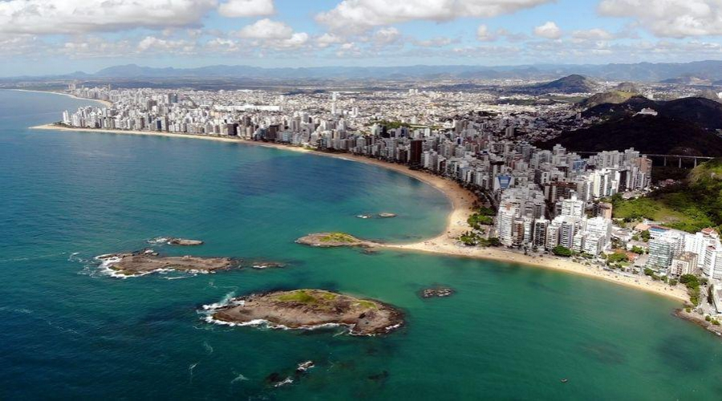

Conheça o berço do descobrimento do Espírito Santo
13 de maio de 2024
Explore a riqueza histórica e natural de Vila Velha, uma jóia escondida no estado do Espírito Santo, Brasil. Situada entre o mar e as montanhas, esta encantadora cidade oferece uma mistura única de beleza natural, patrimônio cultural e hospitalidade local. Descubra as impressionantes formações rochosas que deram à cidade seu nome, como o famoso 'Forno' e 'Furnas', esculpidas ao longo de milênios pela ação da água e do vento. Testemunhe a história no Parque Estadual de Vila Velha, onde você pode explorar trilhas cênicas e admirar pinturas rupestres pré-históricas. Além disso, Vila Velha é abençoada com praias intocadas de areias douradas, perfeitas para relaxar e desfrutar do sol. Aproveite a oportunidade para mergulhar nas águas cristalinas do mar ou saborear frutos do mar frescos em um dos muitos restaurantes à beira-mar. A cidade também é um paraíso para os amantes da cultura, com sua arquitetura colonial preservada e festivais animados que celebram tradições locais. Não deixe de visitar o Convento da Penha, um ícone religioso que oferece vistas panorâmicas deslumbrantes da região. Com sua atmosfera acolhedora e atrações diversas, Vila Velha é o destino ideal para quem procura uma experiência autêntica e memorável no Brasil. Deixe-se encantar pela magia desta cidade encantadora e descubra por que Vila Velha é um tesouro escondido que vale a pena explorar.